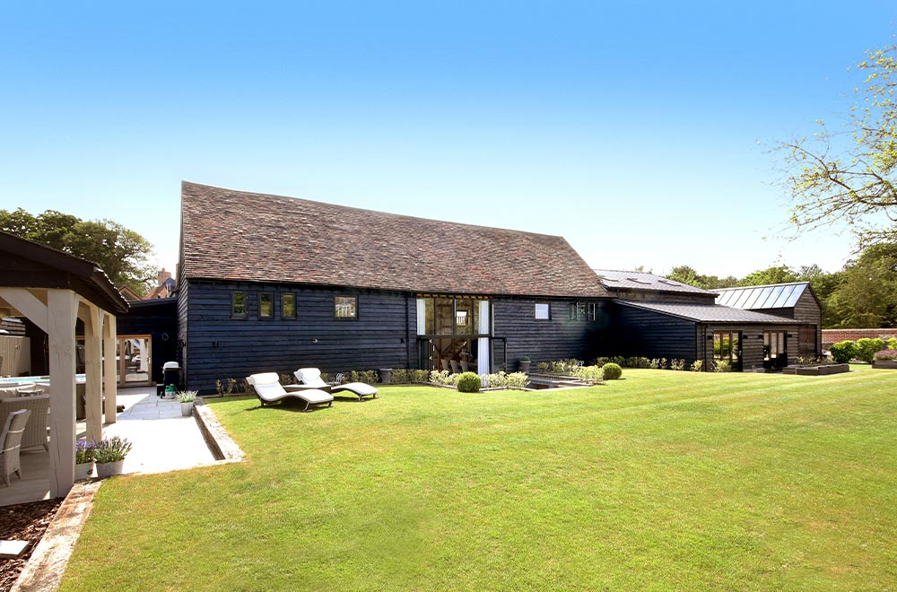
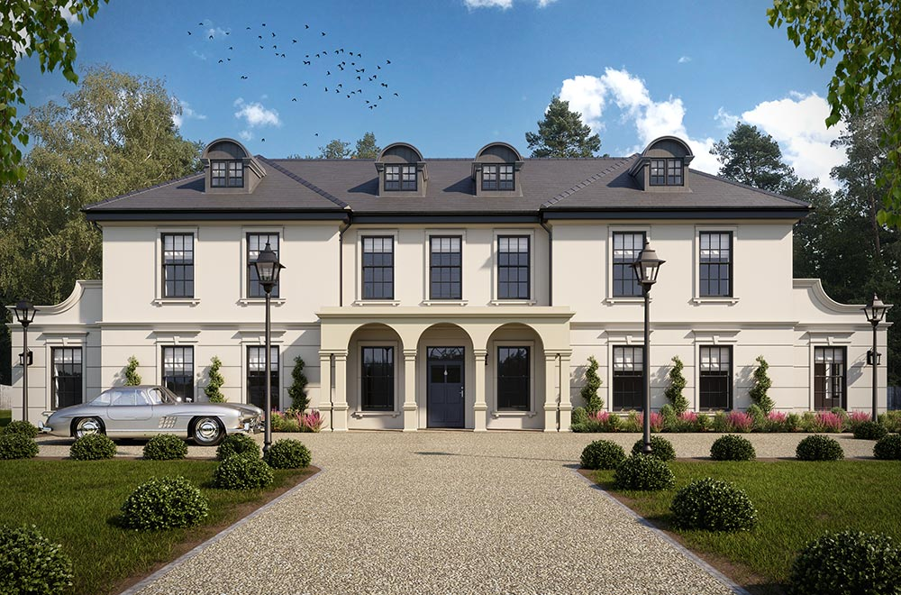
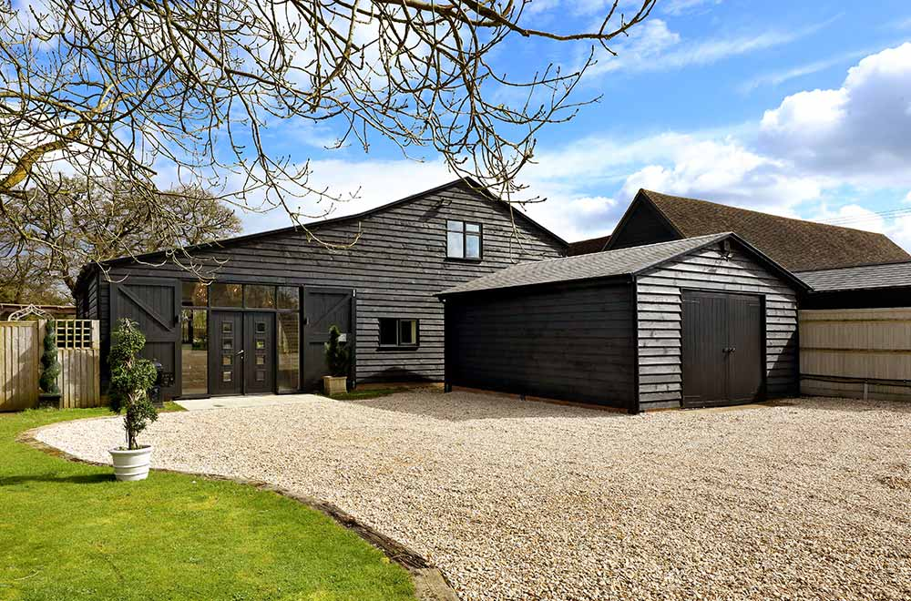
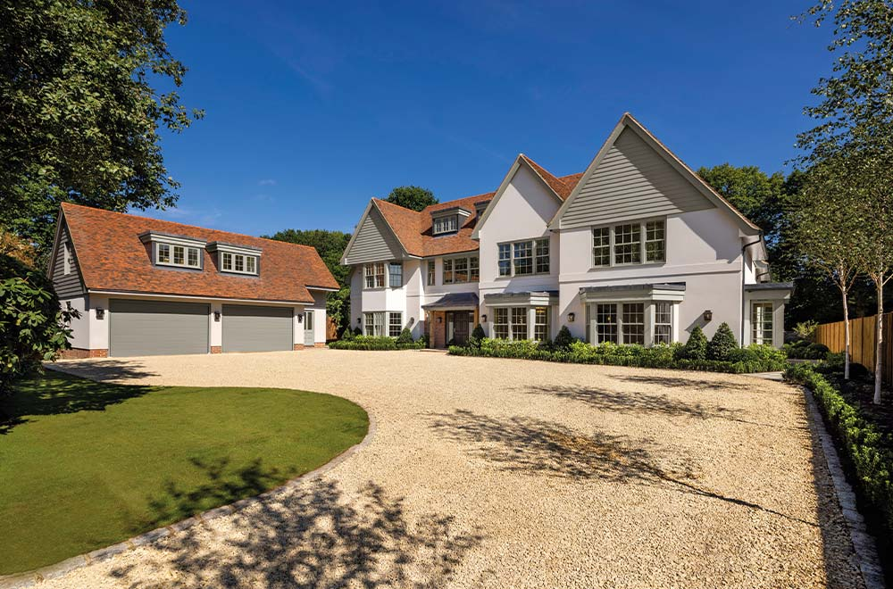

Open each in turn. They all keep the load-in feel you liked, but now lead with the real property imagery. Direction 5 is the Mersi-style strip→grid scroll effect you asked for — start there. Tell me which one (or which bits of each) to take forward.

Hero headline with a horizontal strip of every development along the bottom; as you scroll, the thumbnails expand and reflow into a 3-column grid with hover overlays. Scroll-driven FLIP transition. Scroll slowly to see the morph.
Full-screen property film with a slow Ken-Burns zoom, auto-crossfading between hero developments, kinetic headline overlaid. Maximum drama and immersion.

Headline + a hover-linked list of developments on the left; a large image fills the right and crossfades as you hover each name. Interactive, projects-first.

Layered, magazine-style composition — several properties floating at different depths with a mouse-parallax, big type woven through. Design-led and distinctive.

Editorial headline, then a full-width mosaic wall of developments that animates in with hover-zoom and labels. Shows the whole portfolio instantly.